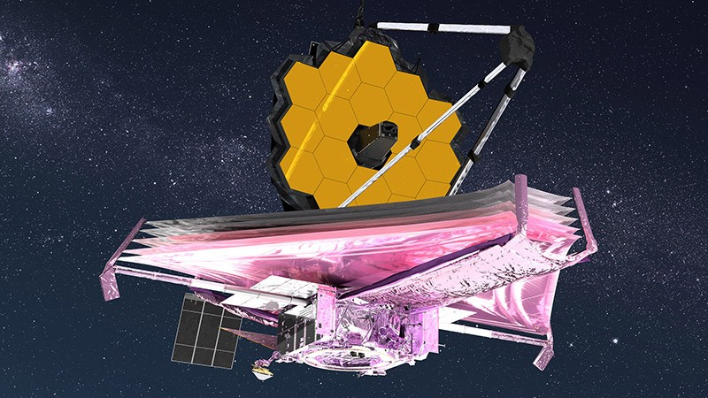

Космический телескоп Джеймса Уэбба (JWST) — это один из наиболее ожидаемых космических проектов, который может изменить наше понимание Вселенной. JWST — это научный инструмент, предназначенный для исследования далеких галактик и звездных систем во вселенной.
Телескоп назван в честь Джеймса Уэбба, который был администратором Национального управления аэронавтики и космической администрации (NASA) с 1961 по 1968 годы. JWST был запущен 25 декабря 2021 года на борту ракеты Ариан 5 в космос из космического центра Гайана.
Одна из особенностей JWST – способность наблюдать в инфракрасном диапазоне, что позволит ему исследовать самые дальние уголки Вселенной и увидеть те объекты, которые не могут быть увидены другими космическими телескопами. Телескоп также оборудован большим зеркалом диаметром 6,5 метров, которое сделает его наиболее мощным космическим телескопом в истории.
Ожидается, что JWST принесет открытия в области космической астрономии и поможет нам лучше понять происхождение Вселенной, формирование звезд и галактик, а также поиск жизни во вселенной.
